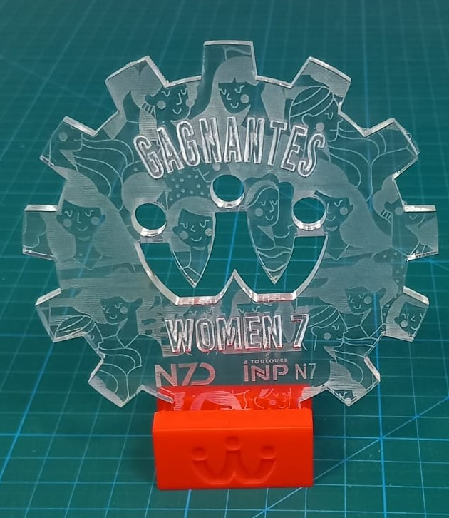
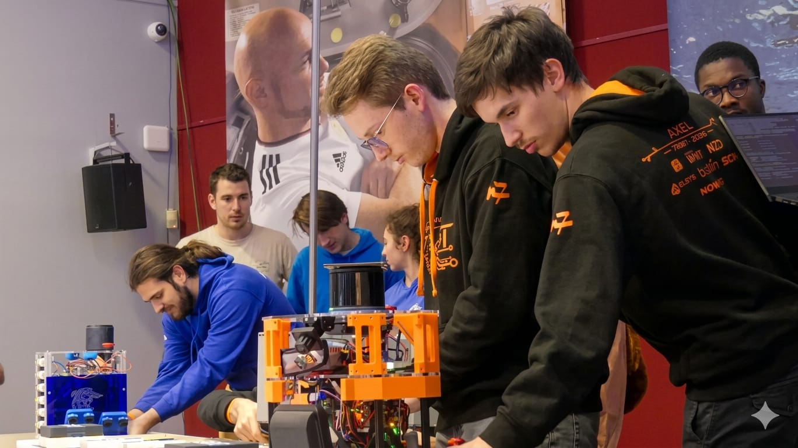
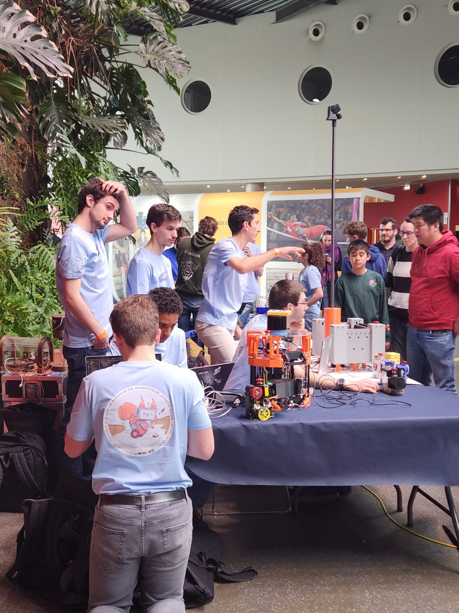

Environmental initiatives, STEM outreach, and volunteering.
Volunteering · June 14, 2026 · Toulouse
Fête des Associations — Planète Sciences
On June 14, together with fellow 7Robot members, we stepped in to help Planète Sciences Occitanie, who were short-staffed, by running their booth all day long (under the summer heatwave!) and showcasing our robots to visitors and families.

STEM Outreach · May – June 2026
Women7 — Trophies & Robotics Workshops
Designed and fabricated custom laser-engraved acrylic trophies on 3D-printed bases at the ENSEEIHT Fablab (SolidWorks & vector design) for Women7, an immersion day promoting engineering careers to middle-school girls, alongside live robotics workshops and PAMI demonstrations.
Toulouse · N7
Clean walk with N7
During the first week of my return to N7, a clean-up walk was organized throughout Toulouse. We collected more than 5 kg of waste.
December 2025 · Épinal
Forum des métiers
I presented ENSEEIHT on December 19, 2025, at my former high school, Claude Gellée in Épinal, where I attended preparatory classes.
Volunteering · Planète Sciences · 2026
Coupe de Robotique Junior Occitanie
Volunteering and refereeing for the regional youth robotics competition organized with Planète Sciences, supporting young teams, running the demonstration booth, and sharing hands-on robotics and engineering enthusiasm.

Preparing & demonstrating our competition robot with the 7Robot team

Running the robotics booth & volunteering at the Coupe de Robotique Junior Occitanie 2026
 Volunteering · June 14, 2026 · Toulouse
Volunteering · June 14, 2026 · Toulouse